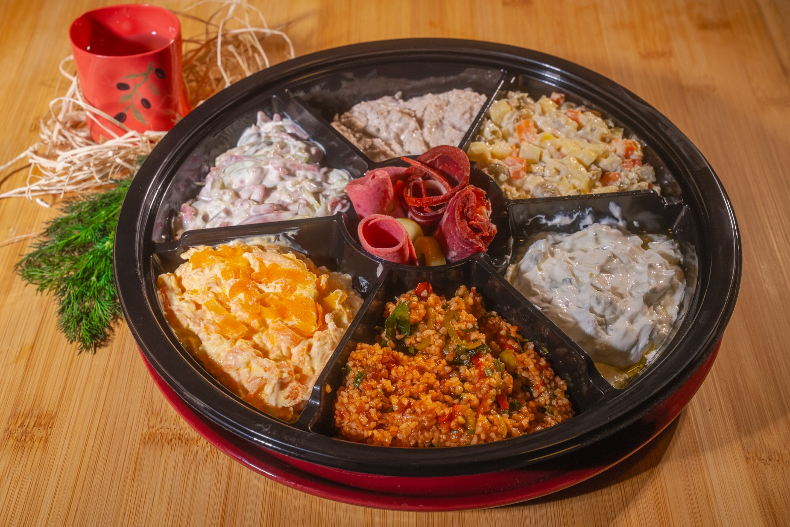

Peynir
Karışık Peynir Tahtası
Sekiz-on çeşit peynir, ceviz, taze incir ve nane ile ahşap tahta üzerinde. Küçük, orta ve büyük boy.
4–6 kişi · 8–12 kişi · 15+ kişi
WhatsApp'tan sipariş verTabaklar & kampanyalar
Davet, kahvaltı ya da hediye — tabaklar sipariş üzerine hazırlanıyor. En az bir gün önceden haber vermeniz yeterli.
Peynir
Sekiz-on çeşit peynir, ceviz, taze incir ve nane ile ahşap tahta üzerinde. Küçük, orta ve büyük boy.
4–6 kişi · 8–12 kişi · 15+ kişi
WhatsApp'tan sipariş verŞarküteri
Pastırma, füme dana, roast beef, salam ve sucuk; turşu, kuru kayısı ve taze kekikle. Rakı ve şarap sofralarının tabağı.
4–6 kişi · 8–12 kişi · 15+ kişi
WhatsApp'tan sipariş ver

Meze
Seçtiğiniz altı meze, ortada şarküteri güllerinin yer aldığı kapaklı tabakta. Taşımaya uygun.
Sipariş ver →
Hediye
Kraft kutuda cevizli, otlu ve olgunlaşmış peynirler; isterseniz şarap eşleştirmesiyle. Kurumsal hediye için uygun.
Sipariş ver →
Günlük
Toplantı ve etkinlikler için baget sandviç, kutu kahvaltı ve meze tabaklarından oluşan servis.
Teklif isteyin →Nasıl çalışıyor
01
Yazın ya da arayın
Kişi sayısı, tarih ve tercih ettiğiniz çeşitleri iletin.
02
Tabağı birlikte kuralım
O gün tezgâhta ne varsa söyleriz; boyu ve içeriği beraber belirleriz.
03
Dükkândan teslim
Söylediğiniz saatte hazır olur. Suadiye çevresine teslim için sorun.
Kampanyalar
Kampanyalar mevsime ve özel günlere göre değişiyor. Güncel duyurular Instagram hesaplarımızdan ve bu sayfadan paylaşılıyor.
Hafta sonu
Kahvaltı sepeti
Peynir, zeytin, reçel ve tereyağından oluşan hazır sepet. Cuma–Pazar tezgâhta.
Özel günler
Bayram & yılbaşı kutuları
Kurumsal ve bireysel hediye kutuları. Adet siparişlerinde önceden haber vermeniz yeterli.
Yeni
Şaşkınbakkal şubesi
Suadiye merkez şube olarak kalıyor; Şaşkınbakkal'da yeni bir dükkân yolda. Açılış duyurusu için takipte kalın.
Fiyatlar kişi sayısına ve seçilen çeşitlere göre belirleniyor. Yazın, aynı gün dönüş yapıyoruz.